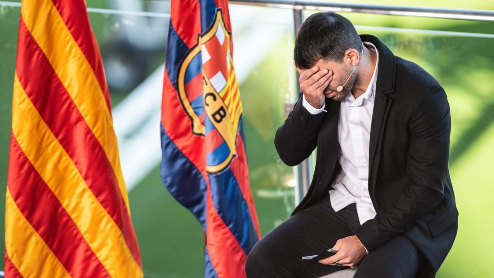
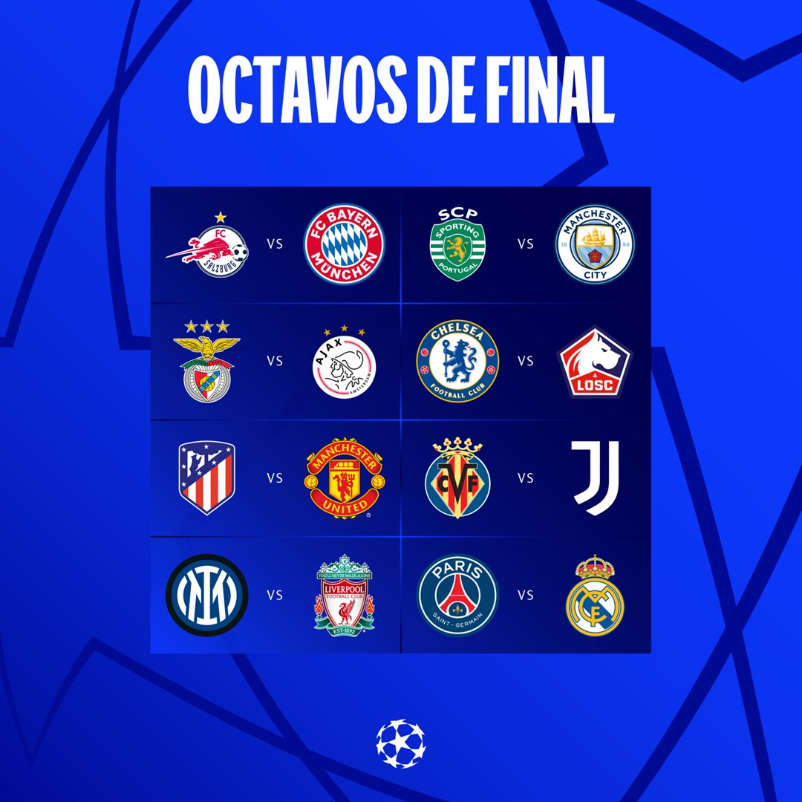
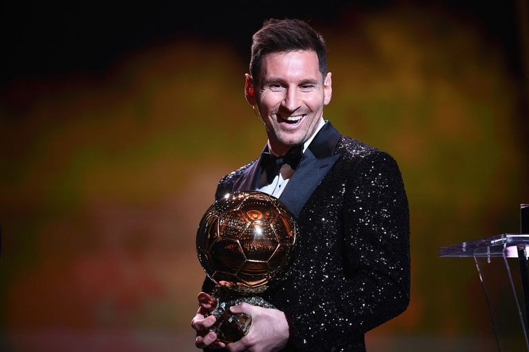

Sergio “Kun” Agüero anuncia retiro oficial del fútbol

Por:Crisitan Gonzalez
Fecha: Miercoles 15 de diciembre de 2021
“Esta conferencia es para comunicarles que he decidido dejar de jugar al fútbol.
He decidido dejar de jugar al fútbol profesional. Y nada, es un momento muy duro. Pero,
bueno, estoy muy feliz igual, por la decisión que tomé. Primero es mi salud. Ya saben por qué tomé esta decisión,
por el problema que tuve hace un mes y pico, por ahí. Así que, nada, estuve en buenas manos de los médicos,
que han hecho lo mejor y me han dicho que lo mejor era dejar de jugar. Tomé la decisión hace 10 días, una semana
por ahí. Quería contarles que hice todo lo posible para ver si había alguna esperanza. Pero, bueno, no había mucha”.
Leer más....
5 Comentarios
Sorteo Uefa Champions League Octavos de final

Por:Crisitan Gonzalez
Fecha: Martes 14 de diciembre de 2021
El pasado 13 de diciembre de 2021 se realizo el sorteo
de los octavos de final de la Uefa Champions League en
su sede en Zurich el cual dejaria interesantes partidos
por ver. Este sorteo pasará a la historia. Los errores
al sacar las bolas en los enfrentamientos de Villarreal
y Atlético han provocado la repetición del sorteo de octavos.
El Real Madrid, gran perjudicado, se enfrentará al PSG en octavos.
El Atlético jugará contra el Manchester United de Cristiano Ronaldo
y el Villarreal se medirá a la Juventus.
Leer más....
5 Comentarios
Balón de oro 2021

Por:Crisitan Gonzalez
Fecha: Martes 30 de noviembre de 2021
El argentino recibió el premio al mejor jugador de 2021, que entrega la revista France Football,
por segunda edición consecutiva, tras la anulación del premio en 2020. Relegó a Robert Lewandowski,
que debió conformarse con el galardón al mejor delantero.
Para Messi, es la séptima vez que obtiene el galardón, el segundo de manera consecutiva tras el logrado en 2019,
teniendo en cuenta que la gala no se celebró en 2020
Leer más....
10 Comentarios